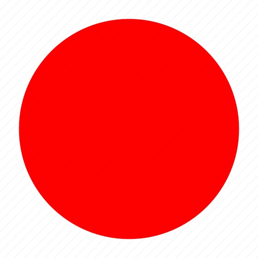

<div class="mat-elevation-z8" style="margin: 30px; border-radius: 15px;">
    <table mat-table [dataSource]="dataSource" >     
      <ng-container matColumnDef="nameSurname">
        <th mat-header-cell *matHeaderCellDef class="user-list-table-header"> Name Surname</th>
        <td mat-cell *matCellDef="let element"> {{element.nameSurname}} </td>
      </ng-container>
      
      <ng-container matColumnDef="userName">
        <th mat-header-cell *matHeaderCellDef class="user-list-table-header"> User Name </th>
        <td mat-cell *matCellDef="let element" > {{element.userName}} </td>
      </ng-container>
      
      <ng-container matColumnDef="email">
        <th mat-header-cell *matHeaderCellDef class="user-list-table-header"> Email </th>
        <td mat-cell *matCellDef="let element"> {{element.email}} </td>
      </ng-container>
  
      <ng-container  matColumnDef="twoFactorEnabled">
        <th mat-header-cell *matHeaderCellDef class="user-list-table-header" style=" text-align: center;"> Two Factor Enabled </th>
        <td mat-cell *matCellDef="let element" style=" text-align: center;" >
        
              
        </td>
      </ng-container> 

      <ng-container matColumnDef="role">
        <th mat-header-cell *matHeaderCellDef class="user-list-table-header"></th>
        <td mat-cell *matCellDef="let element"> <button mat-button style="color: blue;  border-radius: 50%;" (click)="assignRole(element.id)">Rol Ata</button></td>
      </ng-container>

      <ng-container matColumnDef="delete">
        <th mat-header-cell *matHeaderCellDef width="30"></th>
        <td mat-cell *matCellDef="let element" appDelete [id]="element.id" (callback)="getUsers()" controller="users"></td>
      </ng-container>

      <tr mat-header-row *matHeaderRowDef="displayedColumns"></tr>
      <tr mat-row *matRowDef="let row; columns: displayedColumns;"></tr>
    </table>
  
    <mat-paginator  (page) ="pageChanged()" 
    [pageSizeOptions]="[5, 10, 20]"
                   showFirstLastButtons 
                   aria-label="Select page of periodic elements"  >
    </mat-paginator>
  </div>
  